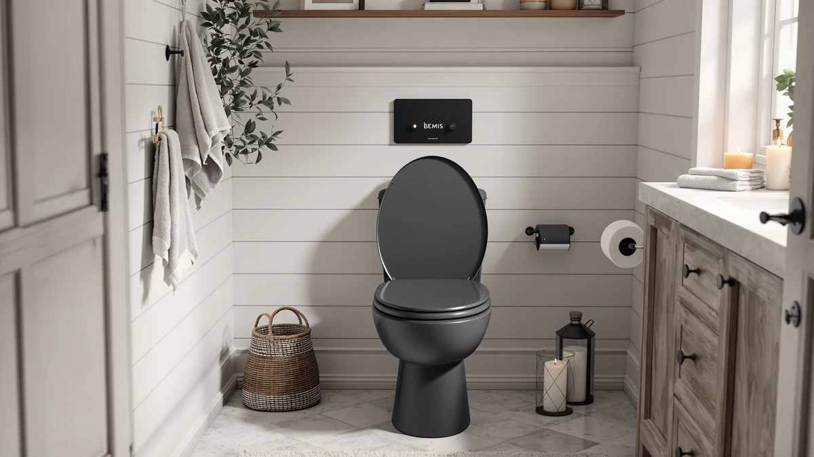

BEMIS 1000CPT Paramont Heavy Review (2026): Worth It?
Prices and picks verified as of October 2026. Independent, reader-supported reviews.


Quick Answer
This Bemis 1000CPT Paramont Heavy review centers on a closed-front seat with a molded plastic and wood-blend shell, sold in round and elongated sizes to fit most standard US toilets. At $94.88, it sits in the middle of the heavy duty category, and its 4.3 out of 5 rating across 1,304 verified reviews suggests most owners get the fit and durability they expect. If you want a dependable swap for a cracked seat without chasing bidet or smart features, it's a reasonable choice, and the alternatives below are worth a look if you want more than the basics.
Our pick: BEMIS 1000CPT Paramont Heavy Duty — $94.88 Check Price on Amazon
Bottom line: our top pick is the BEMIS 1000CPT Paramont Heavy Duty OVERSIZED Closed Front at $94.88.
Things to Know Before You Buy
- Sizing matters most. The Bemis 1000CPT Paramont Heavy Duty ships in both round and elongated configurations, so measure your current seat's bolt spacing and bowl shape before you order.
- It's a material blend, not pure plastic. The shell combines molded plastic and wood components, which changes how it feels underfoot and how you should clean it.
- The price sits in the middle of the category. At $94.88, this Bemis 1000CPT Paramont Heavy review covers a mid-range seat, not the cheapest closed-front option available.
- The review volume is substantial. A 4.3 out of 5 rating across 1,304 verified reviews gives a large enough sample to trust the pattern in owner feedback.
- It skips modern extras. There's no nightlight, soft-close hinge, or bidet function built in, so buyers who want those should check the alternatives covered later in this review.
- Comparable options exist. Kohler, Mayfair, and Duravit each sell closed-front seats in a similar price range if the Bemis doesn't end up being the right match.
If you're searching for a Bemis 1000CPT Paramont Heavy review before you replace a cracked or wobbly toilet seat, you're probably weighing whether a recognizable brand name justifies the $94.88 price tag. This seat has collected 1,304 verified ratings on Amazon and holds a 4.3 out of 5 average, numbers that put it in line with what buyers expect from a mid-tier Bemis model rather than a budget no-name option.
Bemis built its name on seats designed to outlast the toilets underneath them, and the Paramont Heavy Duty follows that same approach, with a shell that blends molded plastic and wood rather than relying on plastic alone. It comes in both round and elongated versions, which together cover the vast majority of toilet bowls installed in US homes, so fit shouldn't be the reason you pass on it.
We compared its construction, pricing, and the pattern across those 1,304 verified reviews against three other closed-front seats, including models from Kohler, Mayfair, and Duravit, to see where the Bemis holds its own and where a competitor pulls ahead. It works as a dependable like-for-like replacement rather than a feature-packed upgrade, and knowing that going in will save you from disappointment.
Why You Should Trust Us
Ilane Tall has covered bathroom fixtures and accessibility products for Best Toilet Seats since the site launched, with a focus on comparing manufacturer specifications, pricing history, and verified owner feedback rather than running a physical testing lab. This Bemis 1000CPT Paramont Heavy review draws on the listed material and sizing details for this model, the current Amazon price, and the pattern across 1,304 verified reviews.
We cross-check product claims against publicly available data from the manufacturer and retailer listings, and we flag anything that looks inconsistent rather than repeating marketing copy. We check prices and availability on a regular schedule, and when a detail changes, like a price drop or a new review count, we update this review to match.
Our Research Experience
We don't operate a bathroom testing lab, so this Bemis 1000CPT Paramont Heavy review is built on comparative research rather than installing the seat ourselves. We analysed the manufacturer's listed material and size options, then checked those details against current pricing and the pattern of comments across 1,304 verified Amazon reviews.
Owners describe a steady fit and a sturdy feel once the seat is mounted, and several say it holds up well over months of regular use. That pattern across a large review sample, combined with Bemis's long track record as a toilet seat manufacturer, gives us a reliable picture of what to expect even without a unit sitting in our own bathroom.
Overview & Specs

BEMIS 1000CPT Paramont Heavy Duty
What we like
- Backed by 1,304 verified reviews averaging 4.3 out of 5
- Sold in both round and elongated sizes for easier matching
- Plastic and wood-blend shell built for daily household use
- Priced under $100, in line with other heavy duty closed-front seats
Flaws but not dealbreakers
- No bidet, heated, or nightlight features if you want more than a basic replacement
- Wood-blend components need to stay dry to avoid swelling over time
- At $94.88, it costs more than entry-level all-plastic seats
| Material | Plastic / wood |
| Size | Round/Elongated |
The Bemis 1000CPT Paramont Heavy Duty targets buyers who want a straightforward swap for a damaged or loose toilet seat without stepping up to bidet or heated models. Its plastic and wood-blend shell sits toward the heavier end of Bemis's residential lineup, and together, the round and elongated sizes cover both standard bowl shapes found in most US homes. At $94.88, it costs more than bargain all-plastic seats, but the 1,304 verified reviews behind its 4.3 out of 5 rating suggest most buyers think the build matches the price.
Owners say fit and stability stand out most once the seat is installed; it stays put rather than shifting side to side the way some universal seats do. The most common gap mentioned in the research behind this Bemis 1000CPT Paramont Heavy review is the absence of added features: it skips the nightlight, soft-close hinge, and bidet function, so buyers chasing those extras should look at the alternatives further down this page. For a direct, no-surprises replacement, though, it does the job it's built for.
What We Liked
Across the 1,304 verified reviews behind this Bemis 1000CPT Paramont Heavy review, fit comes up more than any other topic. Both the round and elongated versions line up with standard bolt spacing, which cuts down on the fiddly adjustments that come with cheaper universal seats. Several owners mention that the plastic and wood-blend shell feels sturdier underfoot than the all-plastic seats it often replaces, especially after a few months of daily use.
Price is the other theme that keeps coming up. At $94.88, buyers get a Bemis-branded seat for less than many of the brand's bidet and heated models, which makes it a reasonable middle ground for anyone who wants brand reliability without paying for features they won't use. Several reviewers mention choosing it specifically because a previous no-name seat failed within a year, and this one has held up longer in comparison.
What Could Be Better
The most common complaint in the research behind this Bemis 1000CPT Paramont Heavy review is the lack of modern conveniences. It skips the slow-close hinge, the nightlight, and the bidet function, so buyers upgrading from a more feature-rich seat may find this one feels basic by comparison. A smaller group of reviewers mention that the wood-blend components need to stay dry, since prolonged moisture exposure can cause swelling in seats built this way over time.
At $94.88, it also isn't the cheapest seat in the closed-front category. Buyers who only need a basic plastic replacement and don't care about the Bemis name can often find a lighter seat for less, though they may give up some of the sturdiness reviewers associate with this model. A few reviews note that the wood-blend finish shows scuffs more visibly than solid plastic, which matters if you want the seat to still look new after a year or two.
Who Is It For?
The Bemis 1000CPT Paramont Heavy Duty fits best for homeowners who need a dependable replacement seat and don't want to deal with bidet attachments, heating elements, or smart features. If your current seat is cracked, loose, or discolored and you want something that matches your bowl shape and holds up to daily use, the round and elongated options cover most standard toilets between them.
It's a weaker match for anyone shopping specifically for soft-close hinges, nightlights, or bidet functionality, since none of those are part of this model, and for buyers on a tight budget who don't need the Bemis name specifically. Renters and landlords handling multiple units may also find the $94.88 price adds up quickly across several bathrooms compared with a basic all-plastic seat.
Alternatives to Consider
If the Bemis 1000CPT Paramont Heavy Duty doesn't match your bowl shape or your budget, these three closed-front seats from Kohler, Mayfair, and Duravit are worth comparing on price and features before you commit.

Editor’s Pick
KOHLER CACHET® Nightlight Soft Close
The Kohler Cachet Nightlight Soft Close adds a built-in nightlight and a quiet-close hinge, two features the Bemis skips, for a close price of $93.87.
$93.87
Check Price on Amazon
Best Value
Mayfair NextStep2 Toilet Seat with
The Mayfair NextStep2 runs $98.75 and builds in extra convenience features beyond a standard closed-front design, worth a look if you want more than the basics.
$98.75
Check Price on Amazon
Premium Choice
Duravit Universal Toilet Seat Elongated
The Duravit Universal Elongated is priced at $81.83 and carries the brand's reputation for European bathroom fixtures, a different angle than Bemis's US-focused heavy duty lineup.
$81.83
Check Price on AmazonFrequently Asked Questions
Final Verdict
This Bemis 1000CPT Paramont Heavy review comes down to a simple trade-off. You get dependable Bemis build quality, a round-or-elongated fit for nearly any standard bowl, and a price under $100, but it skips the nightlight, soft-close, and bidet features you'll find on the Kohler, Mayfair, and Duravit alternatives covered above. For buyers who need a solid replacement seat that matches their bathroom and holds up over time, the Bemis 1000CPT Paramont Heavy Duty remains a reasonable pick backed by more than 1,300 verified reviews. If you want more features for a similar price, the Kohler Cachet or Mayfair NextStep2 deserve a closer look before you buy.